[原文连接]https://towardsdatascience.com/document-embedding-techniques-fed3e7a6a25d
近年来，单词嵌入（将单词映射到数值向量空间中）已被证明是自然语言处理（NLP）任务的一种非常重要的方法，它使各种依赖于向量表示作为输入的机器学习模型都可以享受更丰富的文本表示输入。这些表示形式保留了更多关于单词的语义和句法信息，从而导致几乎所有可以想象的NLP任务的性能得到改善。
新颖的想法本身及其巨大的影响，都促使研究人员考虑如何将这种丰富的矢量表示形式提供给更大的文本单位（从句子到书籍）的问题。这项工作导致产生了许多新方法来生成这些映射，并为该问题提供了各种创新解决方案以及一些显着的突破。
注意”：这里使用“ 文档”一词来指代任何单词序列，从句子和段落到社交媒体帖子，一直到文章，书籍和结构更复杂的文本文档。
在本文中，我不仅会介绍单词嵌入技术的直接扩展方法（例如doc2vec 扩展word2vec 的方法），还将介绍其他值得注意的技术，这些技术有时会在其他输出中生成ℝⁿ中的文档到向量的映射。 。
文件嵌入的应用
将文档映射到信息矢量表示的能力具有广泛的应用。以下只是部分列表。
[Le & Mikolov, 2014]展示了他们的段落向量法在几种文本分类和情感分析任务上的功能，而[Dai et al, 2015] 在文档相似性任务的背景下对其进行了检验， [Lau & Baldwin, 2016]进行了基准测试它针对论坛问题重复任务和 the Semantic Textual Similarity (STS) SemEval shared task.
[Kiros et al, 2015] 已经证明了他们的Skip-thought向量在语义相关性，释义检测，图像句子排名，问题类型分类以及四个情感和主观性数据集上的使用。[Broere，2017]使用它们来预测POS标签和依赖关系。
[Chen et al, 2018] 显示了BioSentVec ，他们在生物医学文本上训练过的句子嵌入集，在句子对相似性任务(official Python implementation).上表现良好。
最后，Deep Semantic Similarity Model was used by various authors 进行信息检索和Web搜索排名，广告选择/相关性，上下文实体搜索和兴趣度任务，问题解答，知识推断，图像字幕和机器翻译任务。
但是请注意，尽管文档嵌入的问题已经很久了，但许多当前有影响力的解决方案还是很年轻的，并且在紧随当代基于编码器-解码器的单词成功之后，这一领域在最近（大约在2014年）开始兴起嵌入技术，所以现在还很早。话虽如此，我希望这部分内容可以将以下各节放在更广阔的背景下，并以有意义的方式进行组织。
突出的方法和趋势
文本嵌入的方法
映射领域的一种可能方法是采用以下四种主要方法：
- 总结词向量
这是对经典的方法。Bag-of-words 正是针对一个热门单词向量而做到的，而您可以应用到它的各种加权方案都是以这种方式总结单词向量的方式。但是，这种方法在与最先进的词表示形式一起使用时（通常通过求平均值而不是求和）也有效，尤其是在考虑到这种用法优化词嵌入时，并且可以与任何这里介绍的更性感的方法。 - 主题建模
虽然这通常不是主题建模技术（如LDA和PLSI）的主要应用，但它们固有地生成了一个文档嵌入空间，用于对语料库中的单词分布进行建模和解释，而维可以看作是隐藏在文档中的潜在语义结构。数据，因此在我们的上下文中很有用。我没有在本文中真正介绍这种方法（LDA的简要介绍除外），因为我认为LDA很好地代表了这种方法，并且众所周知。 - 编码器-解码器模型
这是场景中最新的无监督功能，具有doc2vec 和 skip-thought 之类的功能。尽管这种方法自2000年代初就出现了（以 神经概率语言模型 的名义），但随着其成功地应用于词嵌入生成，它最近获得了新生，目前的研究集中在如何将其用途扩展到文档嵌入。这种方法从大型未标记语料库的可用性不断提高中获得了比其他方法更多的收益。 - 有监督的表示学习
这种方法的应用源于神经网络模型的兴起（或兴起），以及它们使用各种非线性多层算子学习输入数据的丰富表示的能力，该函数可以近似各种映射.。通过简单地将单词袋输入到神经网络中以解决与文本相关的监督问题，您将得到一个模型，其中隐藏层包含输入文本的丰富表示形式，这正是我们所追求的。
有几种不受监督的方法不适用于上述任何一种方法（特别是想到的是快速思考和Word Mover的距离），但是我认为大多数技术确实属于这四大类之一。
注意：虽然很容易指出经典的单词袋技术遭受独特的顺序信息缺失的困扰，但这实际上是规则，而不是例外。通过本文回顾的大多数新方法获得的主要信息是将分布假设扩展到更大的文本单元。基于神经网络的序列模型是例外。
挑战和趋势
整体上研究文档嵌入技术的研究和应用时，会出现几种广泛的趋势，并且可能会发现一些挑战。
- 编码器-解码器优化：研究的重要部分集中在优化无监督的精确体系结构（例如ANN / CNN / RNN）和某些组件/超参数（例如n-gram，投影函数，权重等）上编码器-解码器方法，用于学习文档嵌入。尽管此微调的目标之一是提高各种任务的成功指标，但目标还是能够在较大的语料库上或更短的时间内训练模型。
- 学习目标设计：无监督（或自我监督）表示学习的关键在于设计一个学习目标，该目标利用数据中自由可用的标签，从而生成对下游任务有用的表示。对我来说，这是最令人兴奋的趋势，并且我认为对NLP任务影响最大的趋势可能等同于一个词嵌入技术。目前，我仅将快速思考和Word Mover的距离视为编码器/解码器方法的替代方法。这种趋势的另一个吸引人的方面是，此处的创新也可能适用于词嵌入问题。
- 基准测试：一般来说，机器学习研究是整个领域趋势的一部分，文档嵌入（可能由于它是一个年轻的子领域）很好地证明了研究在越来越广泛的领域对技术基准进行研究的重点（请参阅GLUE排行榜)。但是，几乎所有关于该主题的论文都宣称与当前SOTA技术具有可比或更好的结果，但这尚未导致明显的领先者出现。
- 开放源代码：再次，这是更广泛趋势的一部分，大量使用易于使用的代码实现技术（通常还包括实验）来实现可重现性，并推动了与学术界之外的更广泛的数据科学界的互动，并推动了对真实单词问题的使用。
- 跨任务的适用性：在有监督的嵌入式学习中，情况可能更多，尽管并非所有无监督的技术都具有相同的综合水平。无论如何，依靠文本数据中不同类型的信息，各种各样非常多样化的NLP任务使这一问题成为突出问题。从多个任务中共同学习嵌入是一种受监督的方法可以解决这一挑战的有趣方式。
- 标记语料库：大型标记语料库的有限可用性也是今后有监督方法的问题。这可能代表了未来几年无监督方法在有监督的表示学习中的真正优势。
注意：如果您发现这部分内容与上下文不符，建议您在仔细阅读本文中介绍的大部分技巧后再进行访问。
本节简要介绍了两种适用于文档嵌入的成熟技术：词袋 和*潜在Dirichlet 分配。
传统经典方法
Bag-of-words
Bag-of-words
在[Harris，1954]中提出的这种方法将文本表示为单词的包（Multiset) （丢失语法和排序信息）。这是通过确定一组n个单词组成的，这些单词将构成映射支持的词汇表，并为词汇表中的每个单词分配唯一索引。然后，每个文档都由长度为n 的向量表示，其中第i 个条目包含单词i 在文档中出现的次数。
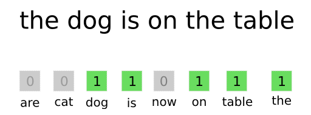
图1：例句中的单词袋表示
例如，句子“dog eat dog world, baby!” （在清理标点之后）可能由550个长度的向量v表示（假设选择了550个单词的词汇），除以下条目外，其他地方均为零：
•$ V_{76}= 1$，因为词汇的第76个词是world 。
• $ V_{200}= 2$，因为词汇的第200个单词是dog 。
• $ V_{322}= 1$，因为第332个单词是 eat。
• 单词中没有选择“ baby ”一词，因此在不输入向量的情况下其值为1。
尽管它非常简单，除了单词出现频率之外，所有信息都丢失了，并且表示大小迅速增长以支持丰富的词汇的趋势，这种技术几乎在几十年中几乎全部用于NLP任务，并获得了巨大成功。即使近年来在文本的矢量表示方面取得了显着进展，但仍在使用此方法的常见细微变化（如下所述），如今，这种变化并不总是唯一的，因为它只是很快被超越的第一个基线。
Bag-of-n-grams
为了获得某些单词袋方法丢失的某些单词顺序信息，可以使用短单词序列（长度为2、3等）的频率（附加或替代）构造单词向量。自然地，对于n = 1 ，词袋是此方法的一个私有案例。
对于“dog eat dog world, baby!” 一词对是”dog eat“，”eat dog “，”dog world “和”world baby“，词汇表由输入语料库中的所有连续单词对组成。
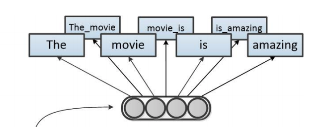
图2：“电影很棒”这句话的2-gram表示法
这种方法的一个主要缺点是词汇量大小对唯一单词数量的非线性依赖性，这对于大型语料库可能非常大。过滤技术通常用于减小词汇量。
TF-IDF weighting
在词袋环境中值得一提的最后一项相关技术是术语频率-逆文档频率, 通常称为tf-idf 。此方法使用每个单词的文档反向频率（IDF）对上述单词（或n-gram）频率向量进行加权。单词的IDF就是语料库中文档数量除以该单词出现在其中的文档数量的对数。
简而言之，TF术语随着单词出现的增加而增长，而IDF术语则随着单词的稀有性而增加。这是为了针对某些单词通常更多（或更少）频繁出现这一事实来调整频率得分。参见[Salton & Buckley, 1988]，可以全面了解术语加权方法。
Latent Dirichlet allocation (LDA)
LDA是一种生成统计模型，它允许由未观察组解释一组观察结果，这些观察组解释了为什么某些数据部分相似。例如，如果观察是收集到文档中的单词，则假定每个文档都是少量主题的混合，并且每个单词的出现都可归因于文档的一个主题。
要将其与单词袋联系起来，可以将前一种方法视为文档在单词上的分布的简单化概率模型。然后，词袋向量代表我们对每个文档中非规范化词分布的最佳近似值；但是这里的文档是概率的基本单位，每个都是其唯一分布的单个样本。
因此，问题的关键在于通过添加潜在的（隐藏的）K 主题中间层，从这种简单的概率性文档模型（按单词分布）转移到更复杂的模型。
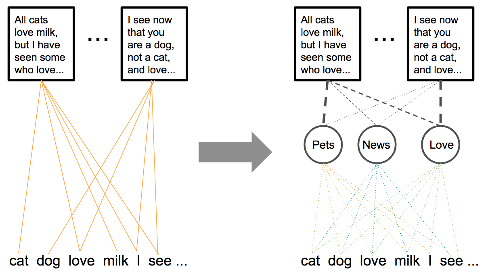
图3：概率模型从单词袋转移到LDA
现在，主题的特征是单词的分布，而文档则是主题的分布。文档的这种概率模型对应于文档的生成模型。假设预定数量的K个主题，要生成一组长度为{Nᵢ} 的M个文档，其中Dir（）表示Dirichlet分布:1
2
3
4
51. 对于每个主题 v ，采样一个单词分布φᵥ〜Dir （β） 。
2. 对于每个文档 i ，采样一个主题分布（或混合）θᵢ〜Dir （ α ） 。
3. 为每个单词 j 生成长度为 Nᵢ的 文档 i ：
1. 为单词 j 进行服从于 Multinomial(θᵢ)分布的主题采样 .
2. 对单词 j 服从于Multinomial(zᵢⱼ)分布 进行采样 。
给定此模型和大量文档，问题就成为了推论之一，并且在推论过程中发现了上述各种分布的近似值。其中有θᵢ，每个文档i 的主题分布，维数K的向量。
因此，在推断模型的过程中，推断出维度为K 的向量空间，该向量空间以某种方式捕获了我们语料库中的主题或主题以及它们在文档中的共享方式。当然，可以将其视为这些文档的嵌入空间，并且-取决于K 的选择-其维数可以比基于词汇的维数小得多。
确实，虽然LDA的主要用例是无监督的主题/社区发现，但其他情况包括将所得的潜在主题空间用作文档语料库的嵌入空间。另外，请注意，其他主题建模技术（例如非负矩阵分解（NMF） 和概率潜在语义索引（PLSI）） 也可以类似的方式用于学习文档嵌入空间。
注意：从业者对概率主题模型的主要问题是稳定性。由于训练主题模型需要对概率分布进行采样，因此随着随机数生成器种子的变化，同一语料库的模型可能会有所不同。主题模型对相对较小的语料库更改的敏感性使此问题更加复杂。
无监督的文本嵌入
本节中介绍的许多方法均受著名的词嵌入技术的启发，其中主要的方法是word2vec ，它们有时甚至是这些方法的直接概括。这些词嵌入技术有时也称为神经概率语言模型; 这些不是完全相同的术语，因为概率语言模型是单词序列上的概率分布，但是由于此方法是在[ Bengio，2003],中作为学习语言模型的一种方法而引入的，因此它们紧密相关。
即使假设您熟悉word2vec ，我仍然希望注意到此模型所做的重要假设，并且可能由这里审查的每个模型（分布假设）推崇。这是维基百科的简短描述：
语言学中的分布假设源于语言使用的语义理论，即在相同上下文中使用和出现的单词往往具有相似的含义。Firth推广了“单词由其所拥有的公司来表征”的基本思想。分布假设是统计语义.的基础。
确实，很容易看到word2vec 和其他用于学习单词表示的自我监督方法都严重依赖此假设。毕竟，模型的症结在于，在学习从单词本身来预测单词上下文时（反之亦然）学习到的单词表示形式代表了捕获深层语义和句法概念和现象的向量空间。意思是，从单词的上下文中学习可以教会我们有关单词的含义和句法作用的知识。
在本节中，将介绍自我监督的文档表示学习，您将看到所有这些方法都维护单词的这一假设，并以某种方式将其扩展到较大的文本单元。
n-gram embeddings
[ Mikolov et al，2013b ]扩展了word2vec 的skip-gram模型，通过使用数据驱动方法识别大量短短语（作者专注于两个单词和三个单词的短语）来处理短短语。在word2vec 模型训练期间，将这些短语作为单独的标记。自然地，这不适合学习更长的短语-因为随着短语长度的增加，词汇量会激增-并且势必不会泛化到看不见的短语 及其遵循的方法。
莫西·哈祖姆（Moshe Hazoom）对这种方法进行了精彩的实践回顾，他的将其用于专注于金融领域的搜索引擎。
Averaging word embeddings
有一种非常直观的方法可以从有意义的单词嵌入中构造文档嵌入：给定文档，对与文档单词对应的所有矢量执行一些矢量算术，以将它们汇总到同一嵌入空间中的单个矢量中；两种常见的汇总运算符是平均值和和。
在此基础上，您可能已经可以想象到，扩展word2vec 及其亲属的编码器-解码器体系结构以学习如何将单词向量组合到文档嵌入中可能会很有趣。遵循这一方法的方法属于这一类。
第二种可能性是使用固定的（不可学习的）运算符进行矢量汇总（例如求平均），并使用旨在产生丰富文档嵌入的学习目标来学习上一层中的单词嵌入；一个常见的示例是使用句子来预测上下文句子。因此，这里的主要优点是优化了词嵌入，以平均化成文档表示形式。
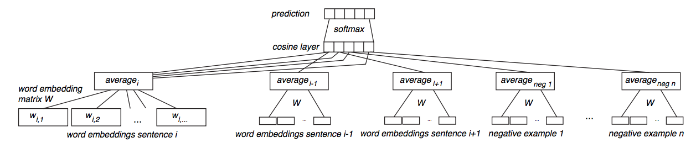
图4：来自[ Kenter等，2016 ]的暹罗CBOW网络架构
[ Kenter等人，2016 ]做到了这一点，即使用平均单词向量的简单神经网络，通过给定句子表示形式预测周围的句子，从而学习单词嵌入。他们将结果与平均的word2vec 向量和跳思想向量进行了比较（请参见下面的相应小节）。[ Hill等，2016 ]比较了许多方法，包括训练CBOW和skip-gram词嵌入，同时优化句子表示（此处使用词向量的逐元素加法）。[ Sinoara等人，2019 ]还提出了将单词嵌入向量和其他知识源（例如单词感知向量）直接嵌入其质心以表示文档的方法。
最后，[ Arora等人，2016年 ]进一步表明，当通过两个小变化进行增强时，此方法是一种简单但难以击败的基线：（1）使用平滑的逆频率加权方案，以及（2）消除常见的词向量的语篇成分；该组件是使用PCA找到的，它被用作最常用语的更正词，大概与语法有关。作者提供了一个Python实现。
注意：当查看基于注意力的机器翻译模型时，也许可以找到正确平均的单词“嵌入”功能的另一种证明。单向解码器RNN获得先前翻译的单词作为输入，不仅是要翻译的当前单词的“嵌入”（即，来自编码器RNN的双向激活），还包括周围单词的翻译。这些以加权的方式平均为上下文向量。据教导，这种加权平均能够从编码器网络的激活中维护复杂的成分和与顺序相关的信息（回想一下，这些不是像我们的情况那样不是孤立的嵌入;每个嵌入都包含前一个/后续单词的上下文）。
Sent2Vec
在[ Pagliardini et al，2017 ]和[ Gupta et al，2019 ]中提出（包括基于C ++的官方Python实现），该技术很大程度上是上述两种方法的组合：word2vec 的经典CBOW模型都得到了扩展包括单词n-gram 并适用于优化单词（和n-grams）嵌入，以便对其求平均以产生文档向量。
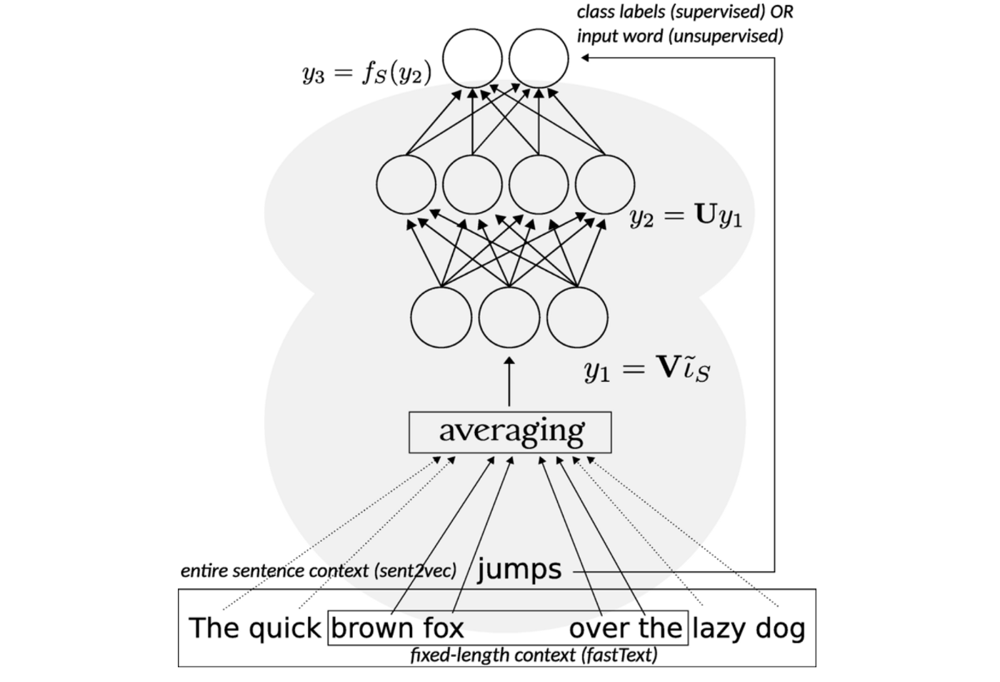
图5：sent2vec可以看作是fastText的无监督版本
另外，删除了输入子采样的过程，而是将整个句子视为上下文。这意味着
1 | （a）放弃使用频繁的单词二次采样（以防止生成n元语法特征） |
想到另一种方式sent2vec 是作为一种无监督的版本fastText ，其中整个句子是上下文和可能的类标签都是词汇。巧合的是，[ Agibetov等人，2018 ]感知使用比较多层的性能sent2vec 向量作为特征到的fastText ，针对生物医学句子分类的任务。
Paragraph vectors (doc2vec)
有时称为doc2vec ，此方法在[ Le＆Mikolov，2014 ]中提出，可能是首次尝试推广word2vec 以使其与单词序列配合使用。作者介绍了段落向量模型的两个变体：分布式内存和分布式词袋。
Paragraph Vectors: Distributed Memory (PV-DM)
PV-DM模型通过添加旨在捕捉段落主题或输入内容的内存向量来增强标准的编码器-解码器模型。这里的训练任务与连续单词的训练非常类似; 一个单词要根据其上下文进行预测。在这种情况下，上下文单词是前面的单词，而不是段落周围的单词。

图6：段落向量的分布式内存模型（PV-DM）
为了实现这一点，每个段落都映射到一个唯一的向量，该向量由词汇表中矩阵中的一列表示（用D 表示）。上下文是固定长度的，并从段落上的滑动窗口中采样。段落向量在同一段落生成的所有上下文之间共享，但不跨段落共享。自然，词嵌入是全局的，并且可以使用经过预训练的词嵌入（请参见下面的实现和增强）。
与word2vec中一样，向量必须以某种方式汇总为单个向量。但是与word2vec 不同，作者在实验中使用串联。请注意，这将保留订单信息。与word2vec 相似，在此汇总的矢量表示上使用了一个简单的softmax分类器（在这种情况下，实际上是分层的softmax）来预测任务输出。使用随机梯度下降法并通过反向传播获得梯度，以标准方式进行训练。
请注意，只有训练语料库中的段落才具有来自D 的列向量。在预测时，需要执行一个推理步骤来计算新段落的段落向量：文档向量是随机初始化的。然后，重复地从新文档中选择一个随机词，并使用梯度下降来调整输入到隐藏层的权重，以使所选词的softmax概率最大化，而隐藏到softmax的输出权重为固定。这导致将新文档表示为训练语料库文档向量（即D的列）的混合物，自然而然地位于文档嵌入空间中。
段落向量：分布式词袋（PV-DBOW）
的第二种变体，尽管其名称如此，也许与word2vec 的skip-gram 体系结构相似。分类任务是仅使用段落向量来预测单个上下文词。在随机梯度下降的每次迭代中，对文本窗口进行采样，然后从该窗口中采样单个随机词，从而形成以下分类任务。

图7：段落向量的分布式词袋模型（PV-DBOW）
除不与段落向量一起共同学习单词向量的事实外，训练在其他方面相似。这使得PV-DBOW变体的内存和运行时性能都更好。
注意：在其Gensim实现中，PV-DBOW默认情况下使用随机初始化的词嵌入；如果dbow_words设置为1，则在运行dbow之前运行一次skip-gram步骤以更新单词嵌入。[ Lau＆Baldwin，2016 ]认为，尽管dbow在理论上可以与随机词嵌入一起使用，但这在他们检查的任务中会严重降低性能。
直观的解释可以追溯到模型的目标函数，该函数的目的是使文档嵌入与其组成的单词嵌入之间的点积最大化：如果单词嵌入是随机分布的，则优化文档嵌入使其更接近于变得更加困难。其更关键的内容词。
应用
[Le＆Mikolov，2014]演示了段落向量在多个文本分类和情感分析任务上的使用，而[Dai等，2015]在文档相似性任务和[Lau＆Baldwin， [2016年]以论坛问题重复任务和语义文本相似性（STS）SemEval共享任务为基准。后面的两篇论文都对该方法进行了扩展评估（前者侧重于PV-DBOW变体），将其与其他几种方法进行了比较，并提供了实用建议（后者包括代码）。
该方法具有gensim包的一部分的Python实现和PyTorch实现。再次，[ Lau＆Baldwin，2016年 ]还提供了用于检查的代码。
最后，提出了对该方法的各种增强。例如，[ Li等人，2016年 ]将该方法扩展为还包含n元语法特征，而[Thongtan＆Phienthrakul，2019年]建议在计算嵌入投影时也使用余弦相似度代替点积（也提供Java实现）。
Doc2VecC
[ Chen，2017 ]提出了一种有趣的方法，该方法受段向量方法（PV-DM）的分布式存储模型以及平均词嵌入来表示文档的方法的启发。
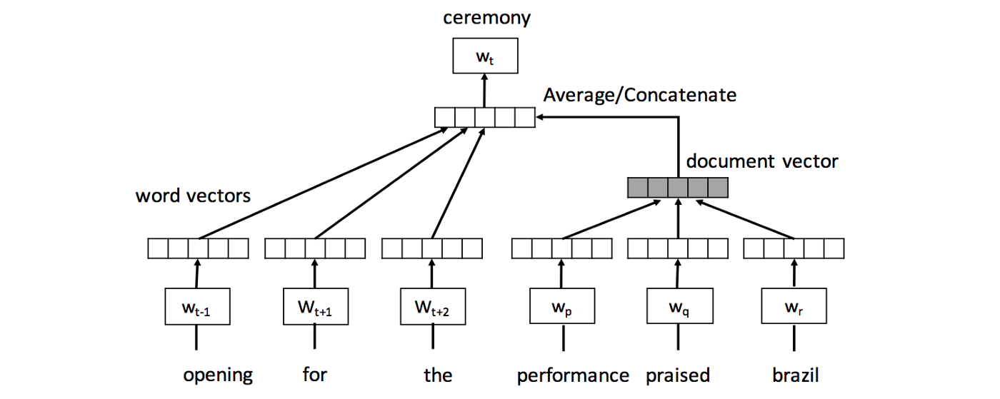
图8：Doc2VecC模型的架构
类似于段落向量，Doc2VecC （通过损坏的文档向量的缩写）由输入层，投影层和输出层组成，以预测目标单词（在上例中为“ceremony”）。相邻单词的嵌入(e.g. “opening”, “for”, “the”)提供局部上下文，而整个文档的矢量表示（以灰色显示）用作全局上下文。与直接针对每个文档学习唯一矢量的段落矢量相反，Doc2VecC 将每个文档表示为从文档中随机采样的单词嵌入的平均值（例如，位置p 处的“performance”，位置q 处的“praised” 和“brazil”在位置r ）。
另外，作者选择通过随机删除大部分单词来破坏原始文档，从而仅对其余单词的嵌入进行平均，从而代表文档。这种破坏机制可以在训练期间加快速度，因为它大大减少了反向传播中要更新的参数数量。作者还展示了它是如何引入一种特殊形式的正则化的，他们认为这种形式可导致观察到的性能提高，以情感分析任务，文档分类任务和语义相关性任务为基准，而不是大量的最新技术。文档嵌入技术。
可以在公共Github存储库中找到基于C语言的开源实现，用于重现本文中的实验。
[ Hill等人，2016 ]还对Skip-thought模型（请参见以下小节）应用了破坏或增加噪声的一般思想，以增加文档的嵌入学习过程以产生更强大的嵌入空间。创建其顺序降噪自动编码器（SDAE）模型。
Skip-thought vectors
这是在[ Kiros等，2015 ]中提出的，这是对word2vec 进行泛化的另一种早期尝试，并且已与官方的纯Python实现一起发布（并且最近还夸耀了PyTorch和TensorFlow的实现）。
但是，这以另一种直观的方式扩展了word2vec （尤其是skip-gram 体系结构）：基本单元现在是句子，并且已编码的句子用于预测其周围的句子。使用在上述任务上训练的编码器-解码器模型学习矢量表示。作者使用具有GRU激活功能的RNN编码器和具有条件GRU的RNN解码器。训练了两个不同的解码器以用于上一个和下一个句子。
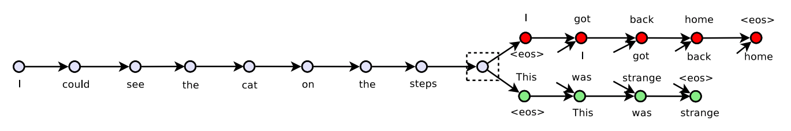
图9：跳过思路模型。给定一个连续句子元组，对句子$si$进行编码，并尝试重建上一个句子$s{i- 1}$和下一个句子$s_{i + 1}$
的词汇扩展跳字思维编码器使用单词嵌入层，将输入句子中的每个单词转换为对应的单词嵌入，从而有效地将输入句子转换为单词嵌入序列。该嵌入层也与两个解码器共享。
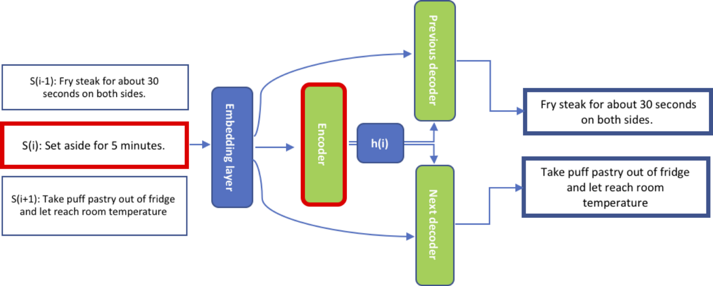
图10：在Skip-thought vectors中，句子sᵢ由编码器编码；两个解码器以编码器输出hᵢ的隐藏表示为条件，以预测$s{i - 1}$和$s{i + 1}$[摘自Ammar Zaher的帖子 ]
但是，作者仅使用了20,000个单词的小词汇量，因此在执行各种任务期间可能会遇到许多看不见的单词。为了克服这个问题，通过解决矩阵W 参数化的非正规L2 线性回归损失，可以从在更大的词汇量上训练的词嵌入空间（例如word2vec ）到Skip-thought模型的词嵌入空间中学习映射。此映射。
应用程序
作者演示了使用Skip-thought的向量进行语义相关性，释义检测，图像句子排名，问题类型分类以及四个情感和主观性数据集。[ Broere，2017 ]进一步研究了跳思维句子表示的句法属性，方法是对它们进行逻辑回归训练以预测POS标签和依赖关系。
[ Tang等，2017a ]提出了一种邻域方法，用于Skip-thought，丢弃排序信息并使用单个解码器预测前一句话和下一句话。[ Tang et al，2017b ]扩展了这项检查，以提出对模型的三个增强，他们声称使用更快更轻的模型可以提供可比的性能：
（1）仅学习解码下一个句子
（2）添加avg 编码器和解码器之间的最大*连接层（作为一种允许进行非线性非参数特征工程的方法）
（3）执行良好的词嵌入初始化。最后，[ Gan等，2016 ]在广泛的应用中，使用基于分层CNN-LSTM的编码器而非仅基于RNN的编码器，采用了相同的方法。
在[ Lee＆Park，2018 ]中提出的另一种变体是通过基于文档结构为每个目标句子选择整个文档中有影响力的句子来学习句子嵌入的，从而使用元数据或文本样式识别句子的依存关系。此外，[ Hill等人，2016年 ]提出了顺序降噪自动编码器（SDAE）模型，这是一种跳变思想的变体，其中输入数据根据某些噪声函数而被破坏，并且训练该模型以从破坏的数据中恢复原始数据。 。
有关进一步的非学术阅读跳跃思维 模式，Sanyam Agarwa给出了他的博客的方法有很大的详细介绍
FastSent
[ Hill等人，2016年 ]提出了一种关于跳跃思维模型的明显简化的变体。FastSent 是一个简单的加法（对数双线性）语句模型，旨在利用相同的信号，但计算成本却低得多。给定某些上下文句子的BOW表示，该模型仅预测相邻句子（也表示为BOW）。更正式地说，FastSent 为模型词汇表中的每个单词w 学习源uᵂ和目标vᵂ嵌入。对于训练例如$S{i- 1}$，$S{i}$，连续句子$S{i+1}$，$S{i- 1}$被表示为它的源的嵌入的总和$s_i = \sum u^w $超过$w∈S_i$ 。$φ（s_i，v^w）$超过
$w∈ S{i- 1}∪S{i + 1}$，其中φ是SOFTMAX功能。本文附带了一个官方的Python实现。
Quick-thought vectors
[ Logeswaran＆Lee，2018 ]将文件嵌入任务（即预测句子出现上下文的问题）重新设计为监督分类问题（参见图12b），而不是先前方法的预测任务（参见图12a）。
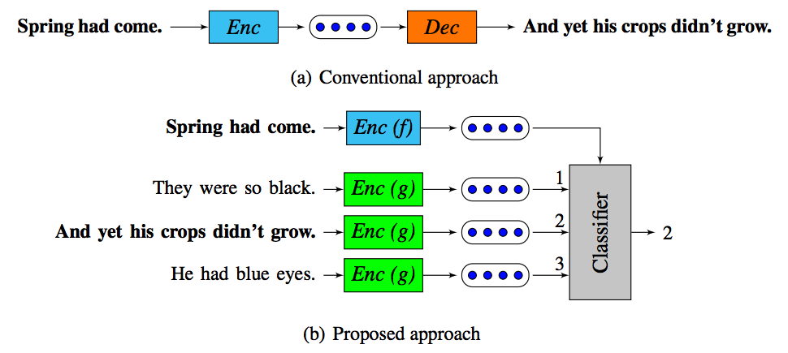
图11：快速思考问题的表述（b）与跳过思考方法（a）的对比
要点是使用当前句子的含义来预测相邻句子的含义，其中含义由从编码函数计算出的句子的嵌入表示；注意，这里学习了两个编码器：f 代表输入语句，g 代表候选项。给定一个输入语句，它由编码器（在这种情况下为RNN）进行编码，但是模型没有生成目标语句，而是从一组候选语句中选择了正确的目标语句。候选集是根据有效的上下文句子（基本事实）和许多其他非上下文句子构建的。最后，构造的训练目标最大程度地为训练数据中的每个句子标识了正确的上下文句子。将以前的句子预测公式看作是从所有可能的句子中选择一个句子，这种新方法可以看作是对预测问题的判别近似。
作者评估了他们在各种文本分类，释义识别和语义相关性任务上的方法，并提供了官方的Python实现。
Word Mover’s Embedding (WME)
来自IBM研究的一种非常新的方法是在[ Wu et al，2018b ]中提出的Word Mover的嵌入（WME）。提供了一个基于C的官方官方Python封装实现。
[ Kushner et al，2015 ]提出了世界移动距离（WMD）；这测量了两个文本文档之间的差异，这是一个文档的嵌入单词在嵌入空间中需要“移动” 才能到达另一文档的嵌入单词的最小距离（参见图13a）。另外，[ Wu等，2018a ]提出了D2KE（到核和嵌入的距离），这是一种从给定距离函数推导正定核的通用方法。
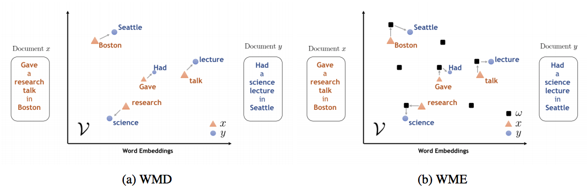
图12：WMD与WME的对比。（a）WMD测量两个文档x 和y 之间的距离，而（b）WME近似于从WMD导出的带有一组随机文档kernel的核。
WME基于三个组件来学习长度可变的文本的连续矢量表示形式：
1 | 1. 以无人监督的方式学习高质量词嵌入的能力（例如，使用*word2vec* ）。 |
使用这三个组件，将应用以下方法：
1 | 1. 使用D2KE，通过给定分布中*单词移动器的距离*（WMD）到随机文档given的无限维特征图，构造正定*单词移动器的内核（WMK）。由于使用了WMD，因此特征图考虑了预训练单词嵌入所给出的语义空间中文档之间各个单词的对齐方式（请参见图12b）。 |
该框架是可扩展的，因为它的两个构件word2vec 和WMD可以用其他技术代替，例如GloVe （用于词嵌入）或S-WMD（用于将词嵌入空间转换为文档距离度量）。
作者在9个真实世界中的文本分类任务和22个文本相似性任务上对WME进行了评估，并证明了WME与其他最新技术始终如一地匹配，甚至优于其他最新技术。
Sentence-BERT (SBERT)
NLP的2018年以Transformer的兴起为标志，最新的神经语言模型受到[ Vaswani et al 2017 ]中提出的Transformer模型的启发-序列模型同时消除了卷积和重复发生，而是将注意力转移到序列表示中。这个蓬勃发展的系列包括BERT（及其扩展名），GPT（1和2）以及XL风味的Transformer。
这些模型生成输入令牌（通常为子单词单元）的上下文嵌入，每个令牌都注入了其邻域的信息，但并非旨在为输入序列生成丰富的嵌入空间。BERT甚至有一个特殊的[CLS]令牌，其输出嵌入用于分类任务，但对于其他任务而言，输入序列的嵌入仍然很差。[ Reimers＆Gurevych，2019年 ]
Sentence-BERT ，在[ Reimers＆Gurevych，2019 ]中提出，并附带一个Python实现，旨在通过使用暹罗和三元组网络结构来派生可以使用余弦相似度进行比较的语义有意义的句子嵌入，以适应BERT体系结构（请参见Fifure 14）。
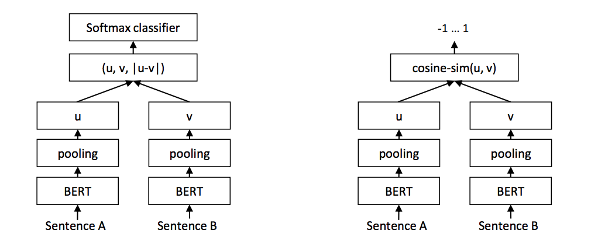
图14：针对分类目标（左）和推理（右）的训练中的SBERT架构
有监督的向量嵌入
上一节中介绍的无监督方法使我们可以从大型未标记的语料库中学习有用的表示形式。这种方法并非自然语言处理所独有，而是通过设计学习目标来学习学习表示形式，这些学习目标利用了数据中可自由使用的标签。因此，这些方法的强度和鲁棒性不仅在很大程度上取决于学习框架，而且还取决于人工设计的学习目标要求或带来对有意义的特征或知识的学习的良好程度，这些特征或知识在各种下游任务中将是有用的。例如，我们希望通过单词和文档嵌入空间可以很好地捕获语义和句法信息。
学习数据有意义的表示法（在我们的情况下是单词序列）的对比方法是利用显式标签（几乎总是由人类注释者以某种方式生成）。在这里，与各种任务的相关性取决于显式任务和用于最终应用程序的标签的接近程度，并且再次取决于此任务带来了对通用特性和知识的学习程度。
我们将看到有监督的方法，从直接利用特定标记任务来学习表示形式的方法，到重组任务或从中提取新标记任务以引发更好表示的方法。
通过标签数据学习文本嵌入
已经进行了各种尝试来使用标记的或结构化的数据来学习句子表示。具体来说，[ Cho等，2014a ]和[ Sutskever等，2014 ]可能是首次尝试使用编码器/解码器方法来显式学习带有标记数据的句子/短语嵌入；第一个使用Europarl （统计机器翻译的平行短语语料库），第二个使用WMT-14数据集中的英语到法语的翻译任务。[ Wieting et al，2015 ]和[Wieting＆Gimpel，2017] 提出了另一种此类显着尝试，其中共同学习了单词嵌入及其在文档嵌入中的映射，以最大程度地减少了复述对之间的余弦相似度（来自PPDB数据集） 。[ Hill等，2015 ]训练了神经语言模型，以将字典定义映射到由这些定义定义的单词的预训练单词嵌入。最后，[ Conneau等，2017 ]在斯坦福大学自然语言推理任务上训练了各种体系结构的NN编码器（请参见图16）。
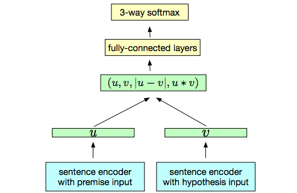
图15：通用的NLI训练方案
文档相似性的上下文嵌入
上述方法的一种特定情况是由文档相似性驱动的。[ Das等，2016 ]展示了文档嵌入，这些嵌入是通过针对社区Q / A的暹罗网络使两个文档之间的相似度最大化的。（见图17）
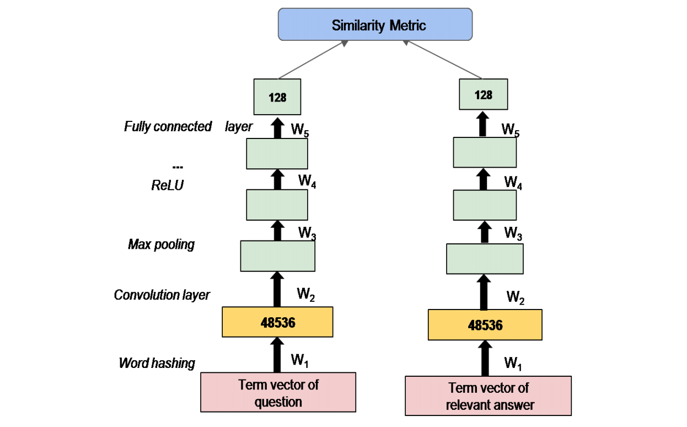
图16：SCQA网络由重复的卷积，最大池和ReLU层以及一个完全连接的层组成。权重W1到W5在子网之间共享。
同样，[ Nicosia＆Moschitti，2017 ]使用暹罗网络在学习二进制文本相似性的同时产生单词表示，同时考虑相同类别中的示例相似。（参见图18）
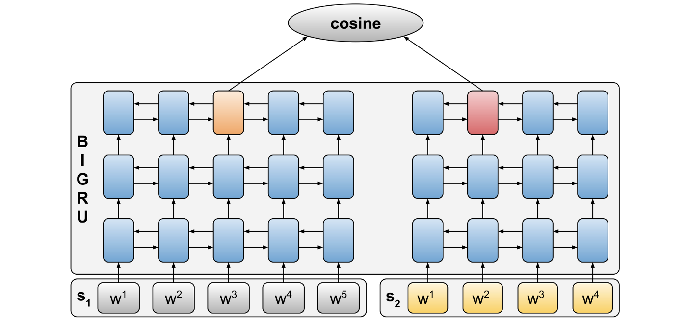
图17：[ Nicosia＆Moschitti，2017 ] 中的暹罗网络架构。每个句子的单词嵌入由3个双向GRU的堆栈使用。两个网络分支共享参数权重。
跨语言降秩岭回归（Cr5）[Josifoski et al，2019]引入了一种方法，用于将以任何语言编写的文档嵌入到一个独立于语言的向量空间中。这是通过训练基于岭回归的分类器来完成的，该分类器使用特定于语言的词袋功能来预测给定文档所涉及的概念。当将学习的权重矩阵约束为低等级时，作者表明可以将其作为因素来获得从特定于语言的词袋到独立于语言的嵌入的期望映射。提供了一个官方的Python实现。
特定于任务的监督文档嵌入
一种用于生成文档嵌入的常见监督方法是使用各种神经网络体系结构，学习将单词向量映射到文档向量的合成运算符；它们被传递给受监督的任务，并依赖于类标签，以便在合成权重之间反向传播（请参见图19）。
因此，网络的几乎所有隐藏层都可以被视为产生输入文档的向量嵌入，其中直到该层的网络前缀都是从单词向量到嵌入空间的学习映射。在[ Wieting等人，2015 ]中可以找到对基于单词向量和监督学习任务的学习句子向量的不同方法的严格检查。
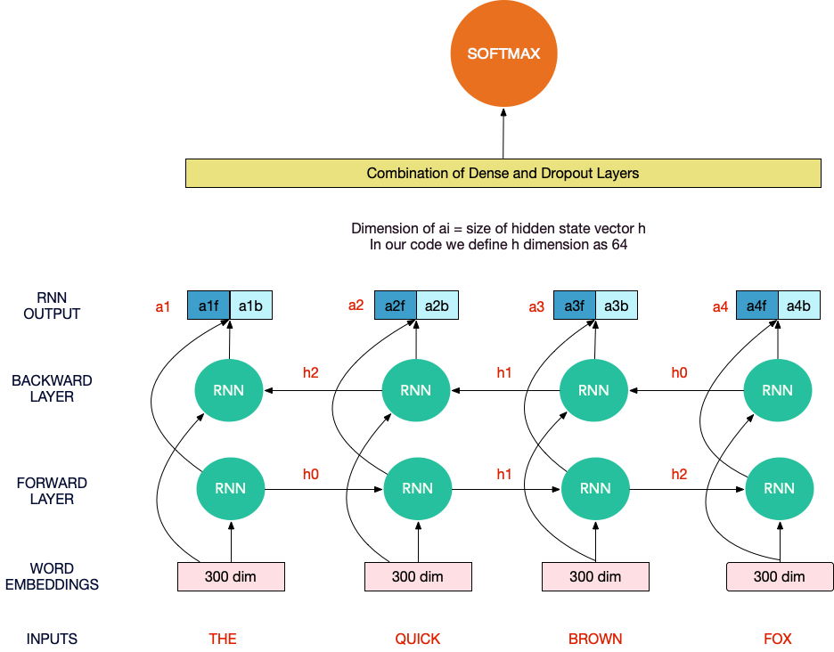
图18：神经网络隐式学习将单词嵌入序列映射到文档嵌入
请注意，虽然所使用的单词嵌入可以预先生成并且与任务无关（至少在一定程度上），但从它们中学到的文档嵌入映射是特定于任务的。尽管这些方法对相关任务很有用，但至少在理论上，与无监督方法相比，此方法势必不那么健壮和通用。[ Kiros等，2015 ]
值得注意的用途包括使用RNN进行情感分类[Socher等，2013]，使用CNN进行各种文本分类[Kalchbrenner等，2014] [Kim，2014]以及使用递归卷积神经网络进行机器翻译和文本分类[Cho等]等，2014a，2014b] [Zhao等，2015]。
GPT
[ Radford等人，2018 ] 提出了一种生成式预训练（GPT）方法（伴随Python实现），使用[ Vaswani等人2017 ]中介绍的转换模型，将无监督和有监督的表示学习结合起来，学习无监督语言对未标记的语料库进行建模，然后使用监督数据分别微调其在每个任务中的使用。他们随后在[ Radford et al，2019 ]中介绍了GPT-2，重点是加强他们工作中的无监督学习部分，并再次发布了正式的Python实现。深度语义相似性模型（DSSM）
作为Microsoft研究项目，DSSM是一种深度神经网络建模技术，用于表示连续语义空间中的文本字符串并为两个文本字符串之间的语义相似性建模（请参见图20）。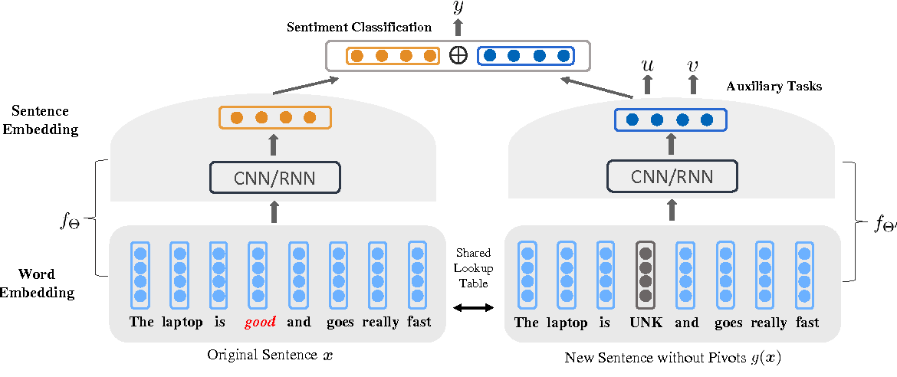
图19：DSSM神经网络的架构
除其他应用程序外，DSSM还用于开发潜在语义模型，该模型将不同类型的实体（例如查询和文档）投影到公共的低维语义空间中，以用于各种机器学习任务，例如排名和分类。例如，[ Huang et al，2013 ]使用它将查询和文档投影到一个公共的低维空间，在该空间中，给定查询的文档的相关性被计算为它们之间的距离。
实现包括TensorFlow，Keras和2个PyTorch 变化。
联合学习句子表示
[ Ahmad et al，2018 ]建议从多个文本分类任务中共同学习句子表示，并将它们与预训练的单词级和句子级编码器结合使用，可以得到健壮的句子表示，可用于迁移学习
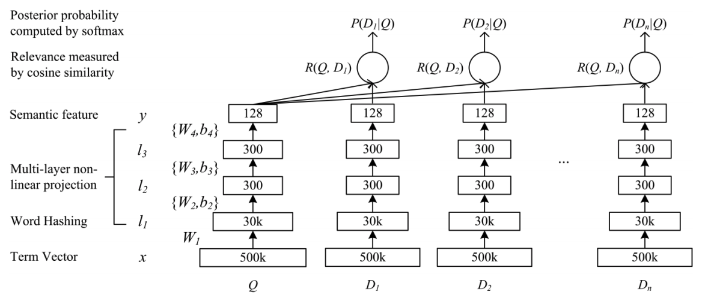
图20：使用辅助任务共同学习句子嵌入
[ Yu＆Jiang，2016 ]类似地表明，使用两个辅助任务来帮助诱导句子嵌入在情感分类中跨域的工作很有效，与情感分类器本身一起共同学习该句子的嵌入（图21）。
在[ Cer等人，2018a ]和[ Cer等人，2018b ]中提出的
通用句子编码器，并伴随着TensorFlow实现，该方法实际上包括两种可能的句子表示学习模型：Transformer 模型和Deep Averaging Network（DAN） ）模型（请参见图22）。两者都旨在允许多任务学习，并且支持的任务包括（1）作为无监督学习的基调思维任务；（2）对话输入响应任务，用于包含已解析的对话数据；（3）用于监督数据训练的分类任务（请参阅前面的小节）。作者专注于具有转移学习任务的实验，并对照简单的CNN和DAN基准对他们的模型进行了基准测试。该方法后来扩展为解决多语言设置。
的变压器模型直接基于在[提出的变压器模型瓦斯瓦尼等人2017 ]，所述第一序列转导模型完全基于注意，取代在编码器-解码器的体系结构最常用的多双头自关注的复发性层（参见图22a）。
该模型使用转换器体系结构的编码子图构造句子嵌入。编码器使用注意力来计算句子中单词的上下文感知表示，同时考虑其他单词的顺序和身份。将上下文感知的单词表示形式平均在一起，以获得句子级的嵌入。
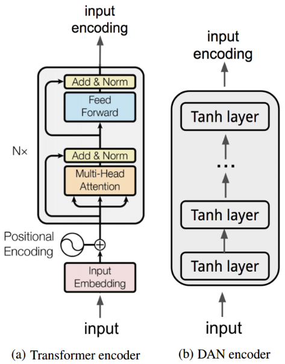
图22：通用句子编码器的两种模型：（a）变压器和（b）DAN
相反，在[ Iyyer et al，2015 ]中提出的DAN模型中，单词和二元语法的输入嵌入首先被平均在一起，然后通过前馈深度神经网络（DNN）生成句子嵌入（见图22b）。 。
GenSen
与通用句子编码器非常相似，[ Subramanian et al，2018 ]中介绍的GenSen方法与官方Python实现一起，结合了多个有监督和无监督的学习任务，以训练基于RNN w / GRU的编码器-解码器模型，嵌入被提取。支持的四个任务是：（1）跳跳向量，（2）神经机器翻译，（3）选区解析和（4）自然语言推论（三向分类问题；给定前提和假设句子，目的是将他们的关系归类为牵连，矛盾或中立。正式的Python实现已发布。
如何选择各种嵌入方法
我在这里没有简单的答案，但是这里有一些可能的要点：
- 平均单词向量是一个很强的基准，因此一个好主意是通过着重于生成非常好的单词向量并首先简单地对其求平均来开始寻求好的文档嵌入。毫无疑问，文档嵌入的强大功能大部分来自构建它们的词向量，我可以肯定地说，在前进之前，有大量信息要优化。您可以尝试不同的预训练词嵌入，探索哪些源域和哪些方法（例如word2vec，GloVe，BERT，ELMo）可以更好地捕获所需的信息类型。然后，通过尝试使用不同的汇总运算符或其他技巧（如[ Arora等，2016 ]中的那些技巧）稍微扩展一下可能已足够。
- 性能可能是一个关键考虑因素，尤其是在方法之间没有明确领导者的情况下。在这种情况下，平均单词向量和一些精益方法（如send2vec和FastSent）都是不错的选择。相反，在使用doc2vec 时，给定每个句子所需的实时向量表示推断，可能会因应用程序限制而证明代价高昂。SentEval是[ Conneau＆Kiela，2018 ]中提出的用于句子表示的评估工具包，在这种情况下值得一提。
- 考虑学习目标对您任务的有效性。上面介绍的不同的自我监督技术以不同的方式扩展了分布假设，而Skip-thought和快速思想则基于句子/段落在文档中的距离对它们之间的紧密关系进行建模。这可能对书籍，文章和社交媒体帖子而言微不足道，但可能不适用于其他文本序列，尤其是结构化文本序列，因此可能会将您的文档投影到不适用于它们的嵌入空间中。同样，WME依赖的单词对齐方法可能并不适用于所有情况。
- 开源实现非常丰富，因此针对您的任务对不同方法进行基准测试可能是可行的。
- 没有明确的特定任务负责人。论文经常针对分类，释义和语义相关性任务对不同的方法进行基准测试。然而，上述结论是在考虑有关该主题的全部文献时，特别是在考虑了2018年的两个最新基准的结果时得出的，[ Logeswaran＆Lee，2018 ]首先提出了他们的快速思考方法。第二种方法是[ Wu et al，2018b ]，这是他们关于Word Mover嵌入的论文的一部分。
最后，我发现它值得一提的是关键词中包含的代码有一个专门的文件嵌入任务，而且Facebook的研究具有开源SentEval，评估工具包句子表示在[呈现Conneau＆Kiela，2018 ]
本文章翻译自原文[原文连接]https://towardsdatascience.com/document-embedding-techniques-fed3e7a6a25d.其对目前大概的文本嵌入方式进行了总结.
我后面将会把最新的文本嵌入方法进行更新.并且计划将上述文本表示进行实践.
Reference
Agibetov, A., Blagec, K., Xu, H., & Samwald, M. (2018). Fast and scalable neural embedding models for biomedical sentence classification. BMC bioinformatics, 19(1), 541.
Ahmad, W. U., Bai, X., Peng, N., & Chang, K. W. (2018). Learning Robust, Transferable Sentence Representations for Text Classification. arXiv preprint arXiv:1810.00681.
Arora, S., Liang, Y., & Ma, T. (2016). A simple but tough-to-beat baseline for sentence embeddings. [unofficial implementation]
Bengio, Y., Ducharme, R., Vincent, P., & Jauvin, C. (2003). A neural probabilistic language model. Journal of machine learning research, 3(Feb), 1137–1155.
B. Broere, (2017). Syntactic properties of skip-thought vectors. Master’s thesis, Tilburg University.
Cer, D., Yang, Y., Kong, S. Y., Hua, N., Limtiaco, N., John, R. S., … & Sung, Y. H. (2018). Universal sentence encoder. arXiv preprint arXiv:1803.11175.
Cer, D., Yang, Y., Kong, S. Y., Hua, N., Limtiaco, N., John, R. S., … & Strope, B. (2018, November). Universal sentence encoder for English. In Proceedings of the 2018 Conference on Empirical Methods in Natural Language Processing: System Demonstrations (pp. 169–174).
Chen, M. (2017). Efficient vector representation for documents through corruption. arXiv preprint arXiv:1707.02377.
Chen, Q., Peng, Y., & Lu, Z. (2018). BioSentVec: creating sentence embeddings for biomedical texts. arXiv preprint arXiv:1810.09302.
Cho, K., Van Merriënboer, B., Gulcehre, C., Bahdanau, D., Bougares, F., Schwenk, H., & Bengio, Y. (2014). Learning phrase representations using RNN encoder-decoder for statistical machine translation. arXiv preprint arXiv:1406.1078.
Cho, K., Van Merriënboer, B., Bahdanau, D., & Bengio, Y. (2014). On the properties of neural machine translation: Encoder-decoder approaches. arXiv preprint arXiv:1409.1259.
Conneau, A., Kiela, D., Schwenk, H., Barrault, L., & Bordes, A. (2017). Supervised learning of universal sentence representations from natural language inference data. arXiv preprint arXiv:1705.02364.
Conneau, A., & Kiela, D. (2018). Senteval: An evaluation toolkit for universal sentence representations. arXiv preprint arXiv:1803.05449.
Dai, A. M., Olah, C., & Le, Q. V. (2015). Document embedding with paragraph vectors. arXiv preprint arXiv:1507.07998.
Das, A., Yenala, H., Chinnakotla, M., & Shrivastava, M. (2016, August). Together we stand: Siamese networks for similar question retrieval. In Proceedings of the 54th Annual Meeting of the Association for Computational Linguistics (Volume 1: Long Papers) (pp. 378–387).
Gan, Z., Pu, Y., Henao, R., Li, C., He, X., & Carin, L. (2016). Unsupervised learning of sentence representations using convolutional neural networks. arXiv preprint arXiv:1611.07897.
Gan, Z., Pu, Y., Henao, R., Li, C., He, X., & Carin, L. (2016). Learning generic sentence representations using convolutional neural networks. arXiv preprint arXiv:1611.07897.
Gupta, P., Pagliardini, M., & Jaggi, M. (2019). Better Word Embeddings by Disentangling Contextual n-Gram Information. arXiv preprint arXiv:1904.05033.
Harris, Z. S. (1954). Distributional structure. Word, 10(2–3), 146–162.
Hill, F., Cho, K., Korhonen, A., & Bengio, Y. (2015). Learning to understand phrases by embedding the dictionary. Transactions of the Association for Computational Linguistics, 4, 17–30.
Hill, F., Cho, K., & Korhonen, A. (2016). Learning distributed representations of sentences from unlabelled data. arXiv preprint arXiv:1602.03483.
Huang, P. S., He, X., Gao, J., Deng, L., Acero, A., & Heck, L. (2013, October). Learning deep structured semantic models for web search using clickthrough data. In Proceedings of the 22nd ACM international conference on Information & Knowledge Management (pp. 2333–2338). ACM.
Iyyer, M., Manjunatha, V., Boyd-Graber, J., & Daumé III, H. (2015). Deep unordered composition rivals syntactic methods for text classification. In Proceedings of the 53rd Annual Meeting of the Association for Computational Linguistics and the 7th International Joint Conference on Natural Language Processing (Volume 1: Long Papers) (Vol. 1, pp. 1681–1691).
Josifoski, M., Paskov, I. S., Paskov, H. S., Jaggi, M., & West, R. (2019, January). Crosslingual Document Embedding as Reduced-Rank Ridge Regression. In Proceedings of the Twelfth ACM International Conference on Web Search and Data Mining (pp. 744–752). ACM.
Kalchbrenner, N., Grefenstette, E., & Blunsom, P. (2014). A convolutional neural network for modelling sentences. arXiv preprint arXiv:1404.2188.
Kenter, T., Borisov, A., & De Rijke, M. (2016). Siamese cbow: Optimizing word embeddings for sentence representations. arXiv preprint arXiv:1606.04640.
Kim, Yoon. “Convolutional neural networks for sentence classification.” arXiv preprint arXiv:1408.5882 (2014).
Kiros, R., Zhu, Y., Salakhutdinov, R. R., Zemel, R., Urtasun, R., Torralba, A., & Fidler, S. (2015). Skip-thought vectors. In Advances in neural information processing systems (pp. 3294–3302).
Kusner, M., Sun, Y., Kolkin, N., & Weinberger, K. (2015, June). From word embeddings to document distances. In International conference on machine learning (pp. 957–966).
Lau, J. H., & Baldwin, T. (2016). An empirical evaluation of doc2vec with practical insights into document embedding generation. arXiv preprint arXiv:1607.05368. [code]
Le, Q., & Mikolov, T. (2014, January). Distributed representations of sentences and documents. In International conference on machine learning (pp. 1188–1196).
Lee, T., & Park, Y. (2018). UNSUPERVISED SENTENCE EMBEDDING USING DOCUMENT STRUCTURE-BASED CONTEXT.
Logeswaran, L., & Lee, H. (2018). An efficient framework for learning sentence representations. arXiv preprint arXiv:1803.02893.
Li, B., Liu, T., Du, X., Zhang, D., & Zhao, Z. (2015). Learning document embeddings by predicting n-grams for sentiment classification of long movie reviews. arXiv preprint arXiv:1512.08183.
Liu, Y., & Lapata, M. (2018). Learning structured text representations. Transactions of the Association for Computational Linguistics, 6, 63–75.
Mikolov, T., Chen, K., Corrado, G., & Dean, J. (2013). Efficient estimation of word representations in vector space. arXiv preprint arXiv:1301.3781.
Mikolov, T., Sutskever, I., Chen, K., Corrado, G. S., & Dean, J. (2013). Distributed representations of words and phrases and their compositionality. In Advances in neural information processing systems (pp. 3111–3119).
Nicosia, M., & Moschitti, A. (2017, August). Learning contextual embeddings for structural semantic similarity using categorical information. In Proceedings of the 21st Conference on Computational Natural Language Learning (CoNLL 2017)(pp. 260–270).
Pagliardini, M., Gupta, P., & Jaggi, M. (2017). Unsupervised learning of sentence embeddings using compositional n-gram features. arXiv preprint arXiv:1703.02507.
Pennington, J., Socher, R., & Manning, C. (2014, October). Glove: Global vectors for word representation. In Proceedings of the 2014 conference on empirical methods in natural language processing (EMNLP) (pp. 1532–1543).
Radford, A., Narasimhan, K., Salimans, T., & Sutskever, I. (2018). Improving language understanding with unsupervised learning. Technical report, OpenAI.
Radford, A., Wu, J., Child, R., Luan, D., Amodei, D., & Sutskever, I. (2019). Language models are unsupervised multitask learners. OpenAI Blog, 1(8).
Reimers, N., & Gurevych, I. (2019). Sentence-BERT: Sentence Embeddings using Siamese BERT-Networks. arXiv preprint arXiv:1908.10084.
Rudolph, M., Ruiz, F., Athey, S., & Blei, D. (2017). Structured embedding models for grouped data. In Advances in neural information processing systems (pp. 251–261).
Salton, G., & Buckley, C. (1988). Term-weighting approaches in automatic text retrieval. Information processing & management, 24(5), 513–523.
Sinoara, R. A., Camacho-Collados, J., Rossi, R. G., Navigli, R., & Rezende, S. O. (2019). Knowledge-enhanced document embeddings for text classification. Knowledge-Based Systems, 163, 955–971.
Socher, R., Perelygin, A., Wu, J., Chuang, J., Manning, C. D., Ng, A., & Potts, C. (2013, October). Recursive deep models for semantic compositionality over a sentiment treebank. In Proceedings of the 2013 conference on empirical methods in natural language processing (pp. 1631–1642).
Subramanian, S., Trischler, A., Bengio, Y., & Pal, C. J. (2018). Learning general purpose distributed sentence representations via large scale multi-task learning. arXiv preprint arXiv:1804.00079.
Sutskever, I., Vinyals, O., & Le, Q. V. (2014). Sequence to sequence learning with neural networks. In Advances in neural information processing systems (pp. 3104–3112).
Tang, S., Jin, H., Fang, C., Wang, Z., & de Sa, V. R. (2017). Rethinking skip-thought: A neighborhood based approach. arXiv preprint arXiv:1706.03146.
Tang, S., Jin, H., Fang, C., Wang, Z., & de Sa, V. R. (2017). Trimming and improving skip-thought vectors. arXiv preprint arXiv:1706.03148.
Thongtan, T., & Phienthrakul, T. (2019, July). Sentiment Classification using Document Embeddings trained with Cosine Similarity. In Proceedings of the 57th Conference of the Association for Computational Linguistics: Student Research Workshop (pp. 407–414).
Vaswani, A., Shazeer, N., Parmar, N., Uszkoreit, J., Jones, L., Gomez, A. N., … & Polosukhin, I. (2017). Attention is all you need. In Advances in neural information processing systems (pp. 5998–6008).
Wieting, J., Bansal, M., Gimpel, K., & Livescu, K. (2015). Towards universal paraphrastic sentence embeddings. arXiv preprint arXiv:1511.08198.
Wieting, J., & Gimpel, K. (2017). Revisiting recurrent networks for paraphrastic sentence embeddings. arXiv preprint arXiv:1705.00364.
Wu, L., Yen, I. E. H., Xu, F., Ravikumar, P., & Witbrock, M. (2018). D2ke: From distance to kernel and embedding. arXiv preprint arXiv:1802.04956.
Wu, L., Yen, I. E., Xu, K., Xu, F., Balakrishnan, A., Chen, P. Y., … & Witbrock, M. J. (2018). Word Mover’s Embedding: From Word2Vec to Document Embedding. arXiv preprint arXiv:1811.01713.
Yu, J., & Jiang, J. (2016, November). Learning sentence embeddings with auxiliary tasks for cross-domain sentiment classification. In Proceedings of the 2016 conference on empirical methods in natural language processing (pp. 236–246).
Zhang, Y., Chen, Q., Yang, Z., Lin, H., & Lu, Z. (2019). BioWordVec, improving biomedical word embeddings with subword information and MeSH. Scientific data, 6(1), 52.
Zhao, H., Lu, Z., & Poupart, P. (2015, June). Self-adaptive hierarchical sentence model. In Twenty-Fourth International Joint Conference on Artificial Intelligence.